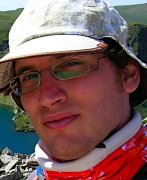

	<div id="grey">
	    <div class="container">
			<div class="row">
        <div class="col-lg-2">
					<p></p>
        </div>
				<div class="col-lg-8">
					<h4>About Myself</h4>
          <p>I am living and working in Paris, France.</p>
          <p>Currently, I hold a PostDoc position until 1/7/2018 in the <a href="http://prosecco.gforge.inria.fr/">Prosecco team</a> where I work
          on the type inference algorithm of the <a href="https://www.fstar-lang.org/">F* language</a>.</p>
          <p>In addition, since 2016 I am teaching in the <a href="https://www.aup.edu/">American University of Paris</a>.</p>
          <p> Previously, I have worked in Dale Miller's <a href="https://team.inria.fr/parsifal/proofcert/">ERC ProofCert project</a> and in the <a href=""http://tla.msr-inria.inria.fr/tlaps/content/Home.html>TLA+ project</a>.</p>
          <p> I have defended my PhD thesis entitled <a
                                                                                                                                                href="/assets/papers/dissertation.pdf">Unification for Higher-order Resolution</a> in 2013.</p>

          <h4><a href="/assets/papers/Tomer_Libal_Resume.pdf">Curriculum Vitae</a></h4>
          <br/>
					<h4>Contact</h4>

          <p>first_name dot last_name at inria.fr</p>
				</div>

			</div><!-- /row -->
	    </div> <!-- /container -->
	</div><!-- /grey -->
